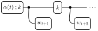

We read the recursion directly from the pre-conditioned diagram by identifying the two operations that advance from time \(t\) to time \(t+1\).
Step 1: Sequential composition with \(k\) (predict). The belief vector \(\alpha_t\) is connected to the transition kernel \(k\) by an internal wire over which we sum. This is sequential composition \((\alpha_t \then k)\), which propagates the belief forward through the transition:

In components: \((\alpha_t \then k)(x') = \sum_{x} k(x' \mid x)\, \alpha_t(x)\).
Step 2: Copy composition with \(w_{t+1}\) (update). The state wire at time \(t{+}1\) is copied: one copy feeds into the observation weight \(w_{t+1}\), and the other continues as the output. This is the copy composition of \((\alpha_t \then k)\) with \(w_{t+1}\):

Copy composition (denoted \(\odot\)) multiplies element-wise, giving: \[
((\alpha_t \then k) \odot w_{t+1})(x') = (\alpha_t \then k)(x') \cdot w_{t+1}(x').
\]
We are now back in the situation we started with, but one time step to the right. The resulting vector is exactly \(\alpha_{t+1}\). The forward recursion is therefore: \[
\boxed{\alpha_{t+1} = (\alpha_t \then k) \odot w_{t+1}.}
\]
For the base case, the same logic applies at \(t = 0\): the initial distribution \(i\) is copy-composed with \(w_0\), giving \(\alpha_0 = i \odot w_0\).